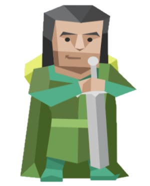

ENFJ-A / ENFJ-T
정의로운 사회운동가

넘치는 카리스마와 영향력으로 청중을 압도하는 리더형.
재기발랄한 활동가, 인구의 대략 2%가 이 유형에 속하며, 정치가나 코치 혹은 교사와 같은 직군에서 흔히 볼 수 있습니다.
이들은 다른 이들로 하여금 그들의 꿈을 이루며, 선한 일을 통하여 세상에 빛과 소금이 될 수 있도록 사람들을 독려합니다.
천생연분 -> INFP, ISFP
궁합최악 -> ESFJ, ISTJ